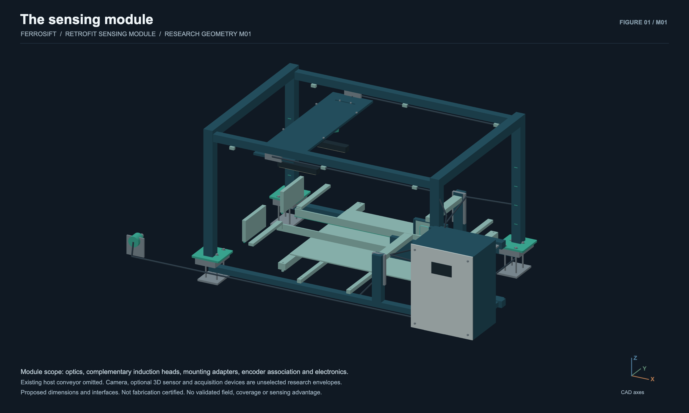
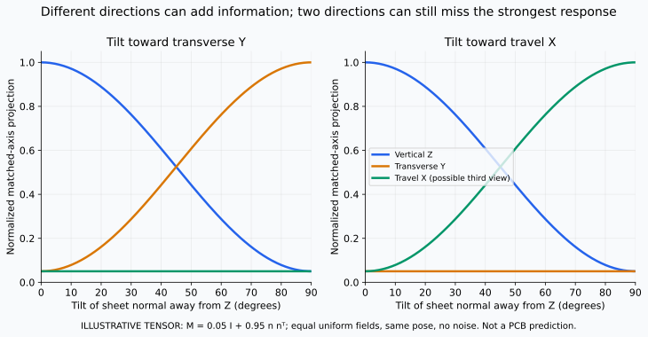

A / From below
Horizontal coil planes below the belt are intended to produce predominantly vertical excitation. Receiver responses are retained throughout the passage.
M01 / Retrofit sensing module · Design study
Follow the hardware from visible shape to a proposed material decision. Scroll through the actual module CAD, or take control and inspect each component.
Jump to multi-angle sensing ↗Scroll to travel through the module ↓
Loading the named CAD assembly…
Actual preliminary CAD · Overlays explain intended directions, not simulated fields
01 / A retrofit module
The colored assembly is Ferrosift’s proposed sensing module. The grey belt and frame belong to the host line.
Prepared feed, transport, downstream ejectors and collection stay with the host. The module adds sensing heads, synchronized acquisition and a proposed decision interface.
02 / Observe the exterior
An RGB camera records appearance, outline and position. Optional 3D adds exterior height and surface geometry.
Those observations help describe how a fragment meets the next sensors. They do not reveal an internal copper map.
03 / Station A · from below
Horizontal coil planes below the belt provide an intended vertical excitation direction. Candidate receivers retain the response as the fragment passes.
A measured sequence would keep channel, frequency, in-phase and quadrature information together. Signal magnitude alone is not copper content.
04 / Station B · across the lane
Upright side heads have axes across the lane. This direction interacts with different conductive paths in the same piece.
The two stations are sequential. Turning a coil changes the intended direction; exchanging transmitter and receiver roles does not create an independent view.
05 / Acquisition + interpretation
The proposed acquisition system aligns optical observations, receiver sequences and encoder travel before interpreting them together.
Belt travel is a proxy for object motion. Slip, bounce and overlap can invalidate association. A future output would retain association quality, buyer-specific class, confidence and an uncertain/recheck state.
06 / Calibration + integration
Removable cartridges, supported cables and calibration access make the research setup maintainable. Every host installation still needs qualification.
Belt reinforcement, nearby frames and rollers affect readings. Access envelopes are design reservations; exclusion distances, calibration stability and safe integration must be measured.
The differentiated hypothesis
Can geometry- and pose-conditioned responses, measured across directions and frequency windows, distinguish conductive structures in layered PCB and e-scrap fragments better than strong simpler baselines?
Horizontal coil planes below the belt are intended to produce predominantly vertical excitation. Receiver responses are retained throughout the passage.
Vertical side-head planes have axes across the belt. This complementary direction is distinct from simply exchanging transmitter and receiver roles.
RGB, optional exterior 3D, encoder travel and response sequences inform one object record, with explicit uncertainty and a possible recheck.
Optical and induction sorting, multiple frequencies and multiple-coil measurements are established. The proposed contribution is a specific PCB-composite experiment and evaluation protocol. No sensing advantage has yet been demonstrated.
Read the research context ↓Proposed object record
One tracked fragment or explicitly detected cluster is the unit of analysis. The intended output is a buyer-specific route recommendation, measurement quality and traceability.
It is not a chemical assay. Strong response does not establish copper purity, precious-metal content or sale value.
Optional calibrated depth adds exterior height and pose. Neither reveals hidden elemental composition.
Keep frequency, drive current, encoder position, time, calibration and quality flags. No module measurements are available yet.
Belt travel is a proxy. Slip, bounce, overlap or rotation can invalidate an otherwise usable signal.
Keep descriptive tags separate from buyer-defined destinations. Confidence requires calibration on held-out material.
An uncertain or invalid record requires an agreed host policy. A predicted route is not proof of physical collection.
Explore the proposed record
Visible board-like outline; no inferred elemental grade.
Research questionWhole-fragment multi-metal assay plus a structural teardown subset.
Candidate policy to testRetain candidate, subject to assay-backed routing validation.
Retain potentially payable material under the partner’s actual process. This is not an Au-rich class.
An agreed alternative, subject to demonstrated low loss of payable value. This is not a metal-free class.
Conflicting evidence, unknown feed or invalid registration. Host policy must define conservative handling.
Proposed route families; none is assigned by these examples. Buyer terms, laboratory assays and independent collected-output trials are required.
The physics behind the question
A changing magnetic field can drive circulating currents in conductive structures. Their response depends on geometry, connectivity, material, frequency and position. Two differently oriented stations are an experiment in additional information.
Each station has one transmitter and two candidate receivers. A controlled drive creates excitation; each receiver records voltage against the reference. Direct transmitter pickup and the object-dependent change both reach the electronics.
A balanced difference can suppress shared pickup, but can also cross a null. Retain individual receiver channels; near-zero difference does not mean little metal.
Coils and flux linkage ↗In-phase and quadrature values retain amplitude and phase. Store frequency, measured drive current, position and calibration with each sequence. No operating frequency or timing specification has been established.
Filtering trades noise against bandwidth and delay. Useful moving-piece measurements must be demonstrated, including clipping, drift and missing acquisition.
Lock-in measurement principles ↗
Tilting the hypothetical planar object shifts its directional weights. Two axes can still be weak together. Real stations have unequal spatial sensitivity, different arrival times and uncertain piece pose; their raw readings cannot be treated as invariant sums.
Six physical windings do not equal six independent directional projections. Two intended axes do not establish a full tensor, tomography or a unique material signature. Swapping the same transmitter and receiver in a reciprocal linear system does not add an independent view.
Directional measurement and reciprocity research ↗Winding recess, housing, support, belt and the conductive feature’s height all affect the under-belt separation. Side coupling also varies with lateral position and width. Phase is not universally immune to lift-off.
Nearby metal can interact with the target as well as change the background. Empty-belt subtraction cannot automatically remove that interaction. The mounted aperture and host compatibility need measurement.
For a homogeneous linear conductor in the magnetoquasistatic planar approximation, skin depth is δ = √[2 / (ωμσ)]. It is a characteristic attenuation length in that material, not a guaranteed sensing distance or layer resolution.
Broken tracks, edges, layered structures and magnetic components need a more complete model. Added turns also change resistance, inductance and parasitic capacitance; visible CAD turns are proposed construction geometry.
Skin effect and assumptions ↗Compare the two-direction module with an equally careful single-direction system on independent fragments and source lots. Keep the simpler design if the extra measurement does not earn its hardware, calibration and feed constraints.
An explanatory experiment
This schematic explains the measurement sequence. It is separate from the dimensional CAD above and supplies no simulated or measured field values.
Open the sequence separately ↗Use the same observations for full sequences versus peak spectra, RGB-only, induction-only and simpler fusion baselines. Test optional 3D separately.
Separate physical fragments, source lots and sessions. Vary pose, gap, overlap, belt background and metal interference at matched decision constraints.
The narrow bench arrangement is not a full-width sensor. Wider arrays, additional or balanced receivers and channel coverage need separate design and validation.
01 / Ferrosift vision
Explore Ferrosift’s custom-trained vision model alongside a YOLO11s reference. Play collected conveyor footage, compare saved detections on identical frames and inspect measured scores where labels are verified.
Ferrosift copper annotation recall
vs 85.6% for the YOLO11s reference
On our labeled conveyor evaluation, Ferrosift detected 94.0% of copper annotations versus 85.6% for the YOLO11s reference, an 8.4 percentage-point improvement.
7,081 / 7,535 versus 6,448 / 7,535 copper annotations across 1,522 development frames. This earlier aggregate is separate from the selected-video scores below; repeated appearances count as annotations.
Inspect the earlier evaluation, replay and steel-alarm counts ↗Collected footage and saved predictions are distinct. This catalog is not a set of independent holdouts; each recording includes its exposure history, source and license. Both models use the same sampled frames.
Evidence boundary
A module design, a recorded model result and a financial scenario answer different questions. This review keeps their claims separate.
Saved predictions and verified labels support the stated annotation metrics. Clip-level scores, development exposure and model identities are available for inspection.
Named solids, interfaces and service provisions make the preliminary design reviewable. Host compatibility, sensing performance and safe integration need physical validation before fabrication release.
Recovery, purity, continuous throughput, operating cost and customer value require material trials, buyer requirements and measured system performance.
Proposed R&D teams
These are proposed workstreams, not claims of a staffed team or completed hardware. Each must answer a concrete question before the module advances.
Characterize what the signals mean.
Compare head geometry, frequency schedules, full responses and simpler features on physically identified fragments. Measure belt and nearby-metal effects, cross-talk, drift and calibration repeatability.
Advance only if the added directions or sequences improve held-out decisions at matched constraints.
Observe shape. Keep evaluation honest.
Develop visible-contour, pose and association estimates; test optional 3D for incremental benefit. Preserve source exposure records and separate fragments, sessions and source lots in future evaluations.
Advance on independent material with frozen thresholds, complete miss counts and uncertainty estimates.
Make the sensing head maintainable.
Develop adjustable mounts, supported cables, removable cartridges, optical cleaning and calibration access. Qualify belt materials, nearby metal, vibration, debris and host guarding with the line owner.
Advance after measured host compatibility, access trials and appropriate safety review; the module does not supply a complete conveyor or sorter.
Associate every observation with its piece.
Synchronize excitation, receivers, image timestamps and encoder travel. Test dropped frames, belt slip, stops and restarts, then define the data and decision handoff to the host controller.
Advance with declared timing and association errors, fault behavior and integration limits demonstrated on the host.
Connect a decision to a material outcome.
Freeze the module and compare it with the host’s baseline on matched lots. Keep every output in a mass-and-element balance; measure availability, intervention rates, operating cost and buyer-relevant value.
Advance only when independent results support recovery, purity and economics together. Annotation recall alone cannot establish any of them.
Aspirational long-term research: the staged 2045 launchpad vision ↗
Independent operator scenario
Explore explicit host-process assumptions for feed, physical recovery, grade, buyer terms and costs. This calculator is not module performance or a product price; recorded annotation recall is never used as physical recovery.
Loading the hypothetical operator calculator…
M01 / Engineering review files
The preliminary module CAD, drawings and named-component inventory share one design basis. Host equipment is reference context; service envelopes and field arrows remain explanatory.
Coordinates are millimetres: X follows belt travel, Y crosses the belt, Z points up. The host reference is a 600 mm belt at Z = 1000 mm. The constrained central 180 mm lane is a proposed mechanical test envelope, not validated electromagnetic coverage or an accepted feed specification.
Horizontal under-belt coil planes and upright transverse side-head planes represent complementary intended directions. The bench receiver arrangement is unoptimized. Full-width sensing may need multiple receive or balanced coils and more coverage channels, with overlap and cross-talk tested explicitly.
The displayed metal-exclusion envelope is a test assumption. Its extent must be established with the actual belt reinforcement, frame, fasteners, rollers, fragments and frequency schedule. A nonmetallic window alone does not establish host compatibility.
Dimensions, mounts, optical footprints, electronics and service spaces require selected components, tolerance analysis, access trials and measured calibration stability. No rated line speed, throughput, recovery, purity or operating range is asserted. Safe integration and downstream actuation remain separate host-system engineering tasks.
Public research rationale
Established systems already combine color, geometry and induction. TOMRA and STEINERT are relevant benchmarks. Generic sensor fusion is prior art, not a Ferrosift novelty claim.
STEINERT KSS CLI ↗TOMRA FINDER ↗ShredderSort combines induction and structured-laser geometry. Ferrosift’s proposed experiment asks whether retaining directional passage sequences helps beyond reduced spectral features on layered PCB fragments.
Primary research paper ↗Published work demonstrates electromagnetic interaction in PCB separation and controlled inspection of concealed board conductors. Neither validates this module on irregular shred fragments.
PCB separation study ↗Controlled board inspection ↗Aluminium research tests optical and inductive features together. Its offline classification and manually corrected matching do not establish end-to-end PCB performance.
Primary aluminium study ↗Multi-coil instruments and magnetic polarizability measurements are established. This module does not claim full tensor recovery or an internal elemental map.
Multi-coil instrument research ↗SteelDS a3 conveyor data is used under CC BY 4.0, with resized/recompressed frames and saved overlays. Repeated observations and source exposure limit the interpretation; no author endorsement.
Dataset record ↗Methods and recording credits ↗Training record ↗